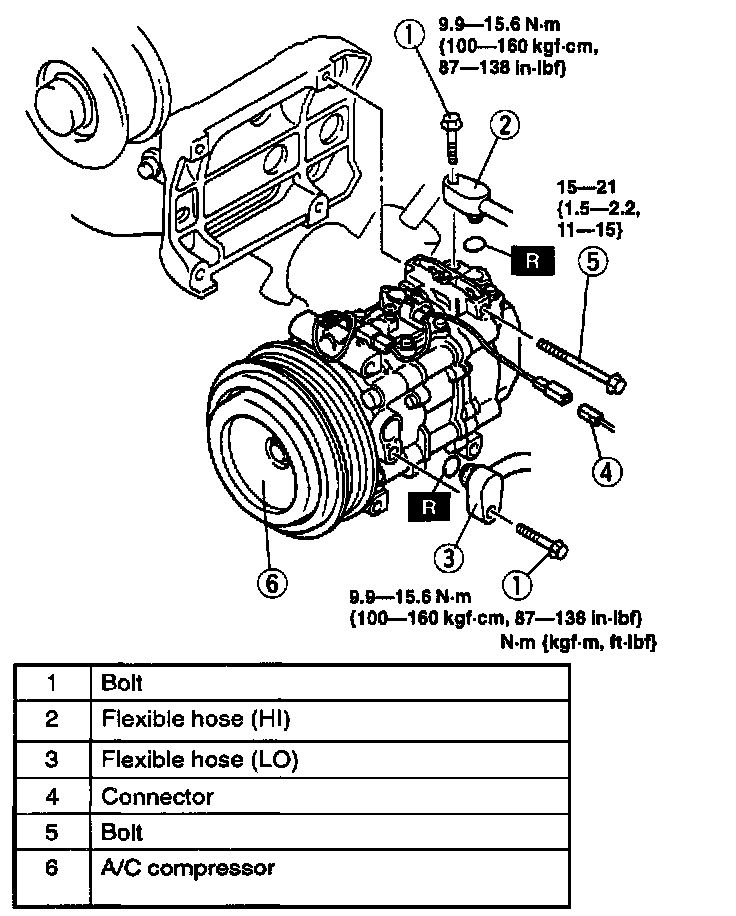

Compressor HVAC: Service and Repair
A/C COMPRESSOR REMOVAL/INSTALLATION1. Discharge the refrigerant from the system.
2. Disconnect the negative battery cable.
3. Remove the under cover.
4. Remove the drive belt (P/S + A/C).
CAUTION: If moisture or foreign material enters the refrigeration cycle, cooling ability will be lowered and abnormal noise will occur. Always immediately plug all open fittings after removing any refrigeration cycle parts to keep moisture or foreign material out of the cycle.

5. Remove in the order indicated in the table. Do not allow compressor oil to spill.
6. Install in the reverse order of removal.
7. Adjust the drive belt (P/S + A/C).
8. Recharge with refrigerant.
9. Perform refrigerant system performance test.
A/C Compressor Installation Note
- Remove the following amount of compressor oil from the new A/C compressor when replacing the A/C compressor.
Compressor oil to the removed = 200 ml (200 cc, 6.76 fl oz) - [compressor oil from old A/C compressor + 15 ml (15 cc, 0.5 fl oz)]